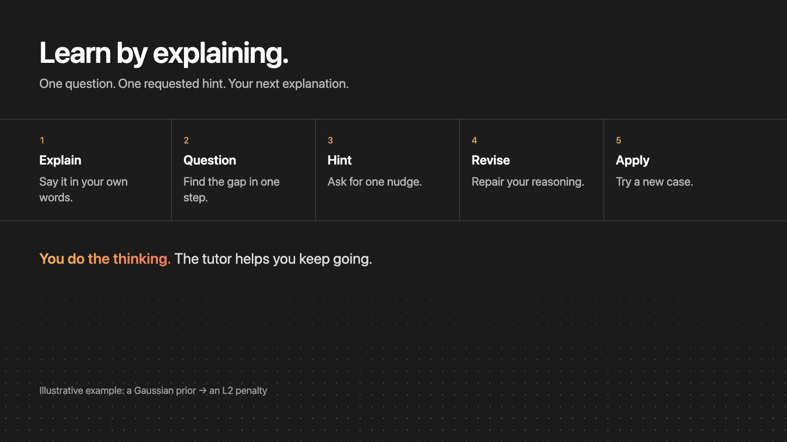

Learning Playground · Tool guide
Socratic Workshop
Start with what you can already explain. The tutor uses your own account of the next token to choose one question, and your next answer determines where the lesson goes.
Take the learner’s first turn
Read the original turn, then close the page and answer from memory. The prompt ends after “The spare key is in the blue drawer. Open the”. What could the model have kept from those earlier words, and how could it use that information now? An incomplete explanation gives the tutor a place to begin.
- Start the live tutor. In a skill-capable coding agent, load the pinned instructions using the setup below. The published page holds the first question. Put your reply in the agent conversation.
- Supply the checkpoint. Paste the saved state and your response. Ask the tutor to resume in English and ask one question at a time. Notice the field recording that initial placement is still pending.
- Respond to the actual follow-up. If the tutor asks which part changes when a word is added, try to reason through a single position. Use hint for one small cue or just tell me for an explanation. The next independent check gives the tutor evidence of what you can do unaided.
- Inspect what it remembered. After placement, say show progress. When you pause, say save state and keep the block. Compare the next focus, any open misconception and the target level with your own experience.
How the questioning works
- Diagnostic
- The learner and tutor agree on a concrete performance target. The tutor breaks it into observable subskills, generally four to ten, and uses an initial explanation and short probes to place each one.
- Practice and recall
- The six levels run from unfamiliarity through independent application to transfer. A level-four judgment requires independent evidence, delayed recall, transfer and a connection to another subskill. Earlier skills can be revisited and revised.
- Figures and final checks
- “Show me” can produce a standalone Workbench figure for the current gap. A learner can make a prediction, vary an input or find a flaw, then explain the result. The final assessment checks individual skills, an integrated problem and a new domain.

What the skill actually supplies
The core is a written teaching protocol executed by a host model. The host reads the learner’s answer, chooses a question and judges the evidence against the rubric. Progress bars reflect those judgments. A checkpoint records the target, levels, focus, outstanding gaps and next question in plain text. It can be inspected and pasted into a new conversation.
The repository adds reference material, a Workbench adapter, examples and visual assets. It can guide an agent to make an interactive figure, but the skill map and turn-taking depend on the agent following the instructions. There is no independent grading service in this trial. Teaching protocol · Workbench figure guide.
Start a workshop in your own agent
From the root of a playground checkout, use Git and a POSIX shell. The installer puts the project registration under the tool home. Start a fresh Codex session there with an already configured Codex CLI.
./install.sh socratic-workshop
cd .local/tools/socratic-workshop
codexFor the recorded workshop, paste this message, replacing the final bracketed words with your answer. If the skill picker is unavailable, ask the host to read source/SKILL.md directly from the tool home.
Use $socratic-workshop. Resume from
../../../topics/how-transformers-remember/cases/one-more-token/runs/2026-11-24-socratic-workshop/state.txt.
Ask one question at a time in English. My answer to the opening question is [your answer].For a new topic, specify what you want to do unaided, a source and your current understanding. The first expected output is a diagnostic question. The map comes after the initial probes.
One opening, awaiting one answer
On November 24, 2026, the active Codex agent read the pinned skill, took the spare-key example from the shared KV-cache field guide and asked its first diagnostic question. We saved an offline reading copy and a compact resume block. The setup resolved to the pinned skill on repeated installs. A separate Codex CLI process could not open its state database in the sandbox, so automatic discovery in a fresh session was unverified.
The opening has no learner answer or assigned level. Follow-ups, figures, hints, retention, the mastery map and final assessment remain untested for this learner. Feedback is pending. Opening turn · Trial record.